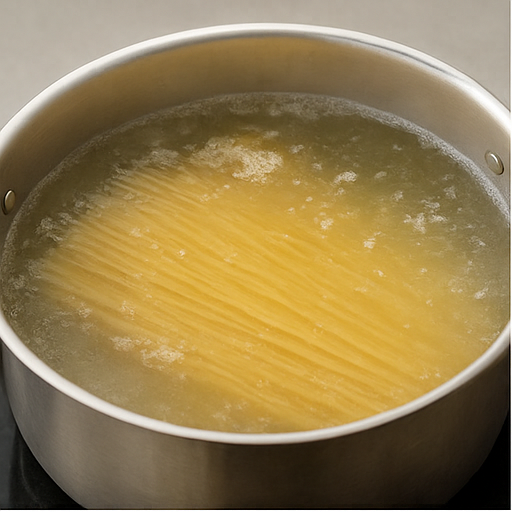
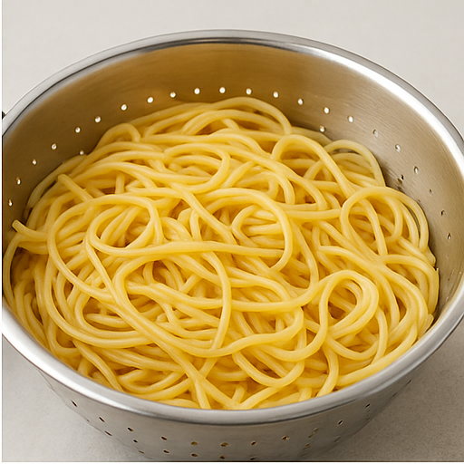
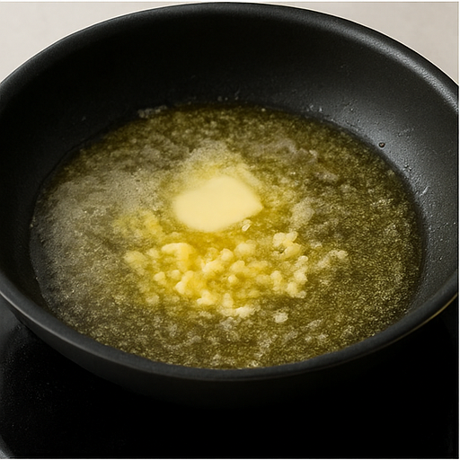
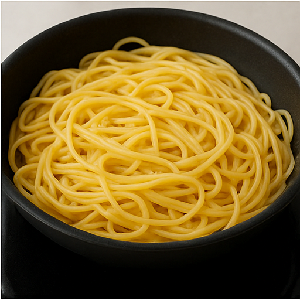
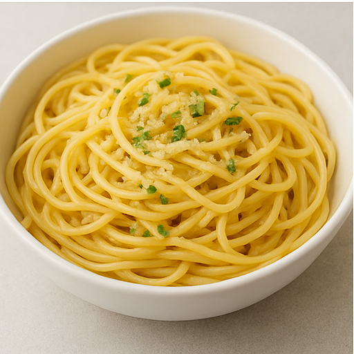
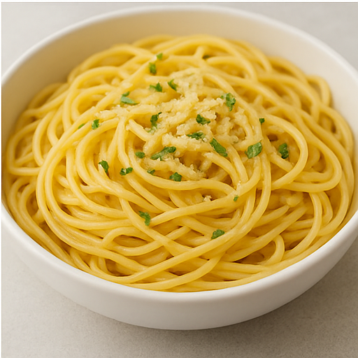

Garlic Pasta Recipe
Ingredients
-
200g (7 oz) pasta (spaghetti, fettuccine, or your choice)
-
3 tbsp unsalted butter
-
3 cloves garlic, minced
-
Salt (to taste)
-
Black pepper (to taste)
-
1 tbsp olive oil (optional, helps prevent sticking)
-
2 tbsp pasta water (reserved)
-
Fresh parsley, chopped (optional garnish)
-
Grated Parmesan cheese (optional)
Instructions
Boil The Pasta
-
Fill a large pot with water and bring it to a boil.
-
Add a big pinch of salt (about 1–2 tsp).
-
Add 200g of pasta to the boiling water.
-
Cook according to the package instructions (usually 8–10 minutes) until al dente (firm to the bite).

-
Reserve 2 tablespoons of pasta water before draining.
-
Drain the pasta and set aside.

Make Garlic Butter Sauce
-
In a large skillet or pan, melt 3 tbsp of butter over medium heat.

-
Add the minced garlic and sauté for 1–2 minutes until fragrant and lightly golden (don’t burn it!).
-
(Optional) Add a splash of olive oil if you like it a bit richer.

Add the cooked pasta to the skillet with the garlic butter.
-
Pour in the reserved pasta water — this helps make the sauce cling to the pasta.
-
Toss everything together for 1–2 minutes until well-coated.

-
Season with salt and pepper to taste.

Serve
-
Plate The Pasta
-
(Optional) Sprinkle with chopped parsley and grated Parmesan.

Serve Hot And Enjoy!!!